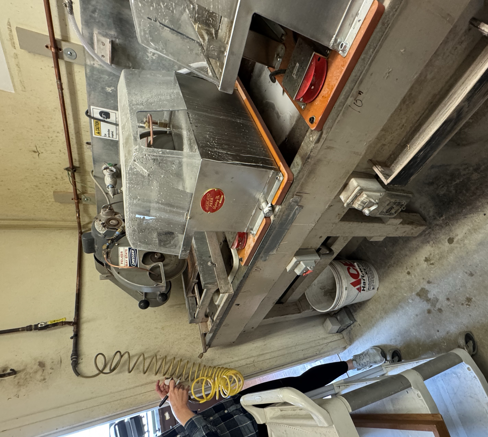
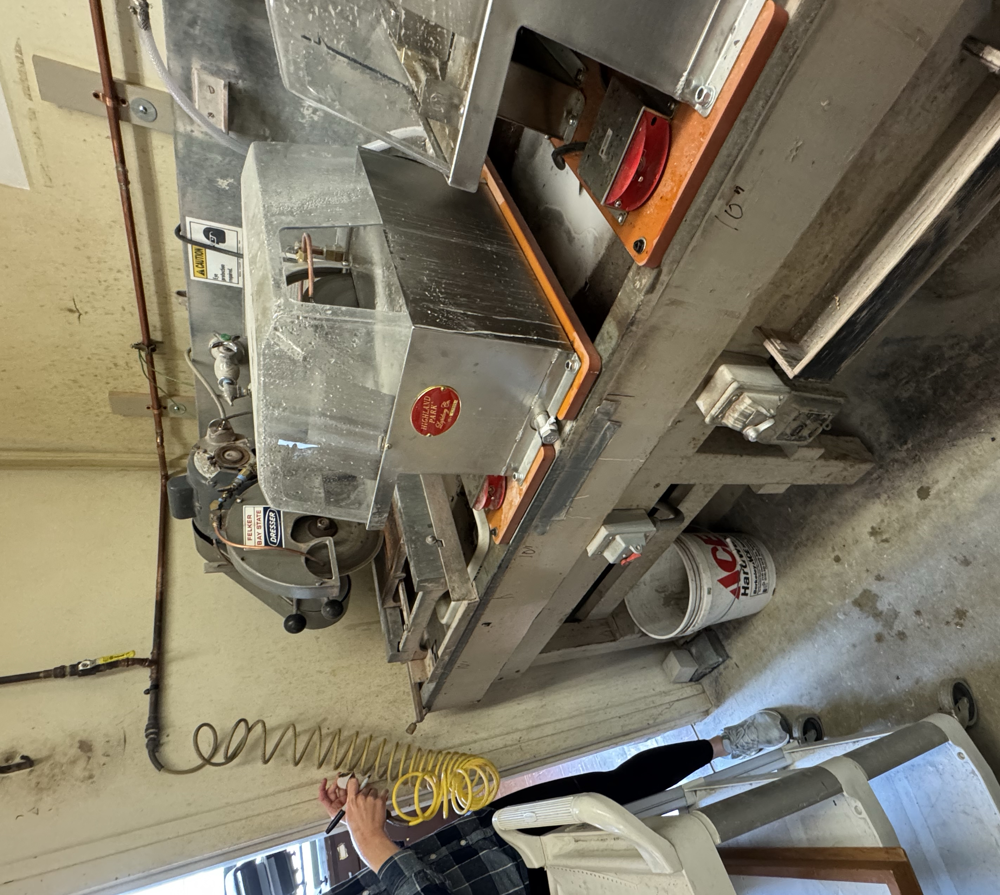
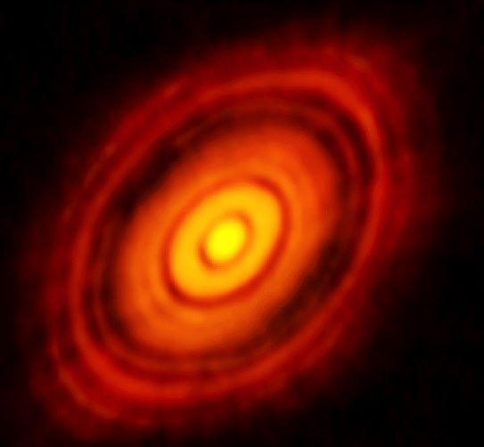
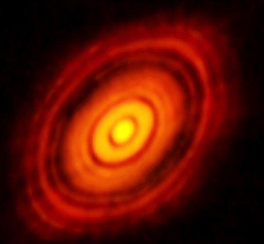

Current Research

Current Research
Investigating carbon isotope excursions:
 

As a part of the Macdonald Lab, I am working on a multi-person project, under graduate students Isabel Koran and Ellery Renger, describing carbonate facies and lithologies in order to understand the effect of diagnosis and mineralogy on carbon isotope values. I was awarded the Ramsden Research Fellowship for the summer 2025 for an independent project where I will develop a protocol for analyzing carbonate major element compositions using an XRF instrument, which is cheaper than using a mass spectrometer and is non-destructive. I will then apply this protocol to analyze the drifts in relevant major elements and isotope ratios of carbonate samples that record the Trezona anomoly, one of the largest recorded CIEs.
Phosporus in protostars:
 

Under the guidance of Dr. Bergner and graduate student Jack Anderson, I am working on a project analyzing the spectra of protostars in order to identify and quantify phosphorus molecules in them. Phosphorus is one of the five elements that is essential for life, yet phosphorus chemistry in protostars in not well understand. Through this project, we hope to better understand where phosphorus is and how it is formed. In order to do this, I use programs such as CASSIS, LTE-RADEX, and python to conduct a rigorous analysis of what molecules could be causing peaks that may be phosphorus, plot synthetic spectra, and calculate column densities.